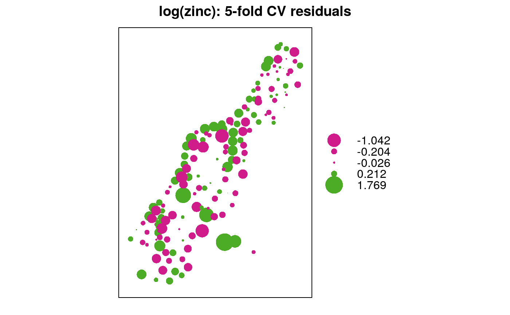

krige.cv.RdCross validation functions for simple, ordinary or universal point (co)kriging, kriging in a local neighbourhood.
gstat.cv(object, nfold, remove.all = FALSE, verbose = interactive(), all.residuals = FALSE, ...) krige.cv(formula, locations, ...) krige.cv.locations(formula, locations, data, model = NULL, ..., beta = NULL, nmax = Inf, nmin = 0, maxdist = Inf, nfold = nrow(data), verbose = interactive(), debug.level = 0) krige.cv.spatial(formula, locations, model = NULL, ..., beta = NULL, nmax = Inf, nmin = 0, maxdist = Inf, nfold = nrow(locations), verbose = interactive(), debug.level = 0)
| object | object of class gstat; see function gstat |
|---|---|
| nfold | integer; if larger than 1, then apply n-fold cross validation;
if |
| remove.all | logical; if TRUE, remove observations at cross validation locations not only for the first, but for all subsequent variables as well |
| verbose | logical; if FALSE, progress bar is suppressed |
| all.residuals | logical; if TRUE, residuals for all variables are returned instead of for the first variable only |
| ... | other arguments that will be passed to predict
in case of |
| formula | formula that defines the dependent variable as a linear
model of independent variables; suppose the dependent variable has name
|
| locations | data object deriving from class |
| data | data frame (deprecated); should contain the dependent variable, independent
variables, and coordinates; only to be provided if |
| model | variogram model of dependent variable (or its residuals), defined by a call to vgm or fit.variogram |
| beta | only for simple kriging (and simulation based on simple kriging); vector with the trend coefficients (including intercept); if no independent variables are defined the model only contains an intercept and this should be the simple kriging mean |
| nmax | for local kriging: the number of nearest observations that should be used for a kriging prediction or simulation, where nearest is defined in terms of the space of the spatial locations. By default, all observations are used |
| nmin | for local kriging: if the number of nearest observations
within distance |
| maxdist | for local kriging: only observations within a distance
of |
| debug.level | print debugging information; 0 suppresses debug information |
locations specifies which coordinates in data refer to spatial coordinates
Object locations knows about its own spatial locations
Leave-one-out cross validation (LOOCV) visits a data point, and predicts the value at that location by leaving out the observed value, and proceeds with the next data point. (The observed value is left out because kriging would otherwise predict the value itself.) N-fold cross validation makes a partitions the data set in N parts. For all observation in a part, predictions are made based on the remaining N-1 parts; this is repeated for each of the N parts. N-fold cross validation may be faster than LOOCV.
data frame containing the coordinates of data or those
of the first variable in object, and columns of prediction and
prediction variance of cross validated data points, observed values,
residuals, zscore (residual divided by kriging standard error), and fold.
If all.residuals is true, a data frame with residuals for all
variables is returned, without coordinates.
Edzer Pebesma
Leave-one-out cross validation seems to be much faster in plain (stand-alone) gstat, apparently quite a bit of the effort is spent moving data around from R to gstat.
library(sp) data(meuse) coordinates(meuse) <- ~x+y m <- vgm(.59, "Sph", 874, .04) # five-fold cross validation: x <- krige.cv(log(zinc)~1, meuse, m, nmax = 40, nfold=5) bubble(x, "residual", main = "log(zinc): 5-fold CV residuals")# multivariable; thanks to M. Rufino: meuse.g <- gstat(id = "zn", formula = log(zinc) ~ 1, data = meuse) meuse.g <- gstat(meuse.g, "cu", log(copper) ~ 1, meuse) meuse.g <- gstat(meuse.g, model = vgm(1, "Sph", 900, 1), fill.all = TRUE) x <- variogram(meuse.g, cutoff = 1000) meuse.fit = fit.lmc(x, meuse.g) out = gstat.cv(meuse.fit, nmax = 40, nfold = 5)#> Linear Model of Coregionalization found. Good. #> [using ordinary cokriging] #> Linear Model of Coregionalization found. Good. #> [using ordinary cokriging] #> Linear Model of Coregionalization found. Good. #> [using ordinary cokriging] #> Linear Model of Coregionalization found. Good. #> [using ordinary cokriging] #> Linear Model of Coregionalization found. Good. #> [using ordinary cokriging]#> Object of class SpatialPointsDataFrame #> Coordinates: #> min max #> x 178605 181390 #> y 329714 333611 #> Is projected: NA #> proj4string : [NA] #> Number of points: 155 #> Data attributes: #> zn.pred zn.var observed residual #> Min. :4.660 Min. :0.04106 Min. :4.727 Min. :-1.046096 #> 1st Qu.:5.314 1st Qu.:0.05054 1st Qu.:5.288 1st Qu.:-0.133537 #> Median :5.775 Median :0.05452 Median :5.787 Median : 0.006930 #> Mean :5.882 Mean :0.05632 Mean :5.886 Mean : 0.003514 #> 3rd Qu.:6.403 3rd Qu.:0.06034 3rd Qu.:6.514 3rd Qu.: 0.160171 #> Max. :7.687 Max. :0.09869 Max. :7.517 Max. : 0.518525 #> zscore fold #> Min. :-4.22112 Min. :1.000 #> 1st Qu.:-0.53431 1st Qu.:2.000 #> Median : 0.03024 Median :3.000 #> Mean : 0.01530 Mean :2.942 #> 3rd Qu.: 0.67320 3rd Qu.:4.000 #> Max. : 2.45696 Max. :5.000#> Linear Model of Coregionalization found. Good. #> [using ordinary cokriging] #> Linear Model of Coregionalization found. Good. #> [using ordinary cokriging]#> Object of class SpatialPointsDataFrame #> Coordinates: #> min max #> x 178605 181390 #> y 329714 333611 #> Is projected: NA #> proj4string : [NA] #> Number of points: 155 #> Data attributes: #> zn.pred zn.var observed residual #> Min. :4.856 Min. :0.04393 Min. :4.727 Min. :-1.52437 #> 1st Qu.:5.382 1st Qu.:0.05944 1st Qu.:5.288 1st Qu.:-0.27045 #> Median :5.903 Median :0.07107 Median :5.787 Median :-0.09095 #> Mean :5.966 Mean :0.07283 Mean :5.886 Mean :-0.07990 #> 3rd Qu.:6.428 3rd Qu.:0.08454 3rd Qu.:6.514 3rd Qu.: 0.14914 #> Max. :7.734 Max. :0.10621 Max. :7.517 Max. : 0.55106 #> zscore fold #> Min. :-4.7612 Min. :1.000 #> 1st Qu.:-0.9359 1st Qu.:1.000 #> Median :-0.3354 Median :1.000 #> Mean :-0.2678 Mean :1.355 #> 3rd Qu.: 0.6001 3rd Qu.:2.000 #> Max. : 2.3860 Max. :2.000#> [1] -0.07990434#> [1] 0.1101475#> [1] 1.487834#> [1] 0.8955611#> [1] -0.1103516